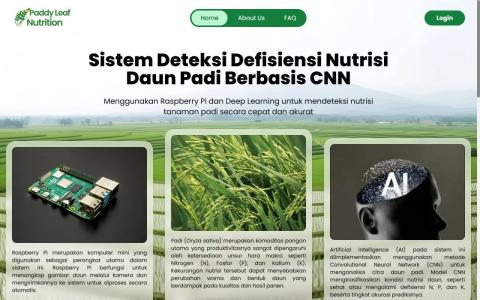
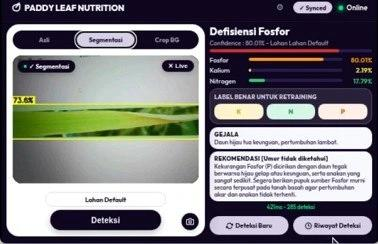
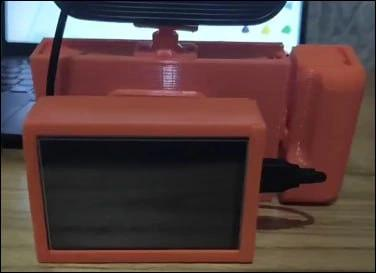
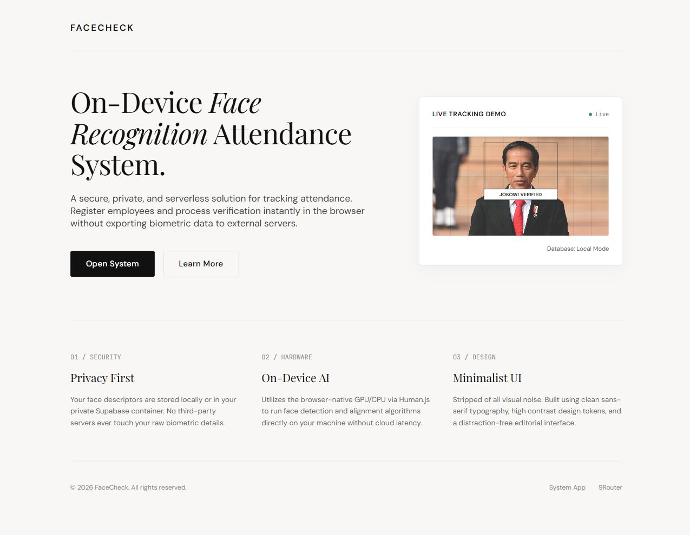

01 Production systems02 Machine learning03 Embedded hardware04 Agentic automation
3.83GPA / 4.00
920TOEIC score
20+Secure API endpoints shipped
BNSPJunior Cyber Security
Selected work / 2025—2026
Five systems. One principle: useful beats impressive.
Each project solves a different operational problem: public administration, field diagnostics, spatial data, identity verification, and AI-powered personal productivity.
01 / PRODUCTION WEB SYSTEM
DPRD Digital Archive
A manual correspondence workflow rebuilt as one integrated archive for incoming mail, outgoing mail, dispositions, and guest administration.
Role
Full-stack Developer
Context
DPRD Provinsi Kalimantan Selatan
Impact
Used by administrative staff
4 rolesProtected access for Admin, Staff, Archive, and Guest.
6 core tablesRelational data model with audit trails and document management.
Production readyCSRF protection, rate limiting, Zod validation, HTTPS, and continuous deployment.
An end-to-end prototype that sees a rice leaf, isolates the region of interest, classifies nutrient deficiency, and explains the result through a portable device.
Role
AI & Embedded Systems Engineer
Pipeline
Capture → segment → classify → report
Hardware
Raspberry Pi + custom enclosure
Computer visionYOLOv11n-seg for leaf ROI and CNN-based deficiency classification.
Edge pipelineWebcam acquisition, preprocessing, and inference on Raspberry Pi.
Physical prototypeCustom 3D-modeled enclosure for the Pi, power bank, webcam, and display.
PYTHON / YOLOV11N / CNN / OPENCV / RASPBERRY PI / LINUX

System overview

Detection interface

Field prototype
03 / GEOSPATIAL BACKEND
KKPR Spatial Data System
A Laravel backend that turns bulk location data into structured, validated map information for land-use suitability workflows.
Role
Backend Developer
Format
REST API + bulk CSV import
Interface
Leaflet map and location detail
LARAVEL / REST API / SQL / CSV / LEAFLET
SYSTEM FLOW / NOT A MOCKUP
01IngestBulk CSV location data
02ValidateInput rules & error handling
03StructureNormalized relational data
04ServeMap markers & location detail
04 / BROWSER AI
FaceCheck Attendance
A browser-based attendance prototype that registers employees, verifies faces through a live camera or photo upload, and records one check-in per person each day.
Role
AI Web Developer
Runtime
Browser-side inference
Storage
Supabase + local fallback
On-device matchingHuman.js generates face embeddings and compares them directly in the browser.
Flexible captureRegister and verify from a webcam or uploaded photos, with 1–5 reference images per employee.
Portable recordsDaily attendance guard, date-filtered logs, CSV export, and dataset photo export as ZIP.
HUMAN.JS / JAVASCRIPT / CAMERA API / SUPABASE / JSZIP
PROTOTYPE / BROWSER AI

FaceCheck attendance · Functional prototype
05 / SERVERLESS AI ASSISTANT
Poline Assistant
A Telegram-native assistant that combines conversational AI with live research, persistent memory, document understanding, reminders, and Google Workspace actions.
Role
Backend & AI Integration Developer
Interface
Telegram Bot
Runtime
Cloudflare edge
Persistent memoryCloudflare D1 keeps conversation context, user preferences, reminders, and per-user model settings.
Tool-enabled AILive web search, page extraction, PDF reading, image understanding, and source-aware responses.
Workspace actionsOAuth 2.0 integration for Gmail, Calendar, Drive, and Google Tasks with confirmation before sensitive actions.
CLOUDFLARE WORKERS / D1 / TELEGRAM API / 9ROUTER / OAUTH 2.0 / GOOGLE APIS
I’m a final-year Informatics Engineering student at Politeknik Negeri Banjarmasin. My work sits between full-stack software, applied machine learning, and the physical devices that carry both into the field.
I care about clear data models, secure boundaries, and interfaces that make complex systems understandable to the people operating them.
EducationInformation Technology Politeknik Negeri Banjarmasin
LanguagesIndonesian / English Professional working proficiency
Open to meaningful work
Need someone who can connect the API, the model, and the machine?